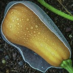

Intriguing Veiled Butternut

This site along with
Octagonal Handsomely Burrito
makes use of the experimental
Declarative Link Capturing
spec.
Go to chrome://flags/#enable-desktop-pwas-link-capturing in Chrome to enable the experiment.
This site uses
"capture_links": "existing-client-navigate".